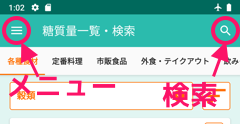
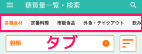

ヘルプ
ポケット糖質量をお使いくださりありがとうございます!
ポケット糖質量は1600種類以上の食品に含まれる糖質量が検索できるアプリです。
100グラムあたりの糖質量と、それぞれの食品の1回分を目安とした分量に含まれるエネルギー（カロリー）・たんぱく質・脂質・塩分が表示できます。
健康づくりのためにぜひご利用ください。
画面の配置について

左上のメニューボタンをクリックすると全体のメニューが表示されます。
お気に入り・設定・ヘルプ画面などがあります。
右上の虫メガネアイコンをクリックすると任意の文字で食品を検索できます。

ここはタブです。食品の分類別に６つのタブが隣り合っています。
左右にスワイプするかタブの文字をクリックして表示を切り替えて見てください
左端のバーを押すとドロップダウンメニューが表示され、肉類・魚介類のように更に食品の種類を絞り込むことが出来ます。
1600以上の食品データがありますから上手く絞り込んで表示してみてくださいね。
選択を解除したい場合は、ドロップダウンメニューのトップの「全ての種類」をクリックして下さい。
食品の種類の右側のボタンはソート（並び替え）ボタンです。
デフォルトでは食品名順に並んでいますが糖質量順や脂質量順に並び替えが出来ます。
このアプリの栄養成分は文部科学省の日本食品標準成分表2015年版（七訂）
（
http://www.mext.go.jp/a_menu/syokuhinseibun/1365297.htm）を基本として独自に調べたものを使用しています。
あくまでも目安として使用していただきたいと思っておりますので、正確な情報をお求めの場合は、
上記の成分表をご確認されることを推奨しております。
成分量が微量の場合は0gと表示されていることがあります。
100gあたりの脂質量は多少精度が荒いので、微量の場合は0gと表示されていることがあります。
当アプリは管理人一人で運営しておりますので成分についてのご質問はお受け出来かねます。
食品の検索方法
検索の入力欄に食品名の一部を入れて下さい。
食品のざっくりした種類（弁当, 冷凍食品など）でも検索されるよう、
なるべく多めにデータがヒットするようにしております。
検索結果が一件も表示されない時は候補の言葉を短くしてみて下さい。
ひらがな・カタカナ・漢字でお試しください。
食品の文字の色について
当アプリでは糖質量が含まれる割合によって4種類の文字色を表示しています。
- 糖質量が100g中5gまで・・・青色の文字（糖質量が少ない）
- 糖質量が100g中5g以上15g未満・・・緑色の文字（糖質量がやや多い）
- 糖質量が100g中15g以上50g未満・・・赤色の文字（糖質量が多い）
- 糖質量が100g中50g以上・・・紫色の文字（糖質量が非常に多い）
糖質量が多いものでも少量なら問題ないなど、ケースバイケースですのであくまでも目安としてお考え下さい。
角砂糖Ｘ個分という表記について
糖質量を1個4gの角砂糖だと何個分になるか表示しております。
小数点以下第2位は四捨五入しています。
この値はその食品を摂った時に角砂糖と全く同じように血糖値が上がるということではなく、
わかりやすい視覚情報を認識することで糖質制限のモチベーションを維持することを念頭に置いております。
あくまでも単純な重さの目安としてお考え下さい。
一回分あたりの値について
食品をクリックするとビューが大きくなり表示項目が増えます。
「◯◯gあたりの値」とあるのはおおむね一回分あたりの値を表示しています。
一回分あたりの値は一食分の目安として実際に使う量を意識しております。あくまでも目安としてご利用下さいませ。
一回分あたりの値を割り出せない食品につきましては「100gあたりの値」の数値を表示しています。
お気に入りについて
食品をクリックするとビューが大きくなり右下にハートのボタンが現れます。クリックしてボタンが赤くなればお気に入りに登録されたことになります。
画面上部のメニューからお気に入りを表示しますとハートを押して登録した食品が一覧表示されます。
お気に入りから削除する場合、再度ハートを押します。ボタンが灰色になればお気に入りから削除されたことになります。
これからもポケット糖質量をよろしくお願いいたします。